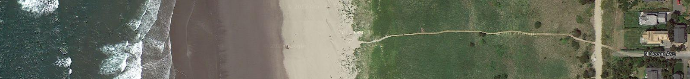
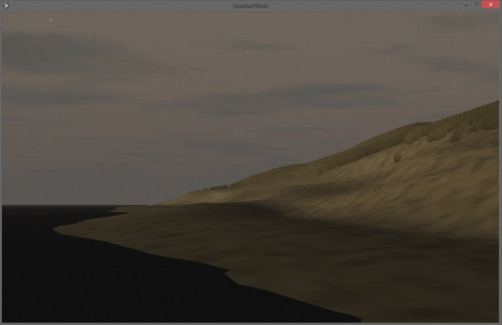

Gearhart Walk - 2014
Gearhart Walk is a 3d representation in Unity of a path along the Oregon coast I've grown up visiting. Using references from Google Maps and my memory of the location I put the scene together halfway accross the United States in Chicago. The Oregon Coast's forceful weather keeps the shape of the physical beach in constant flux. This reconstruction preserves a spatial memory of the place in a static embedded environment. Lossy transcription through reference photos and idealization result in a dry yet gentle virtual world.
You can look around it down here: http://thnewlands.github.io/pages/gearhartwalk/


Gearhart Walk uses the Unity webplayer plugin which Chrome is no longer friendly with. I recommend finding another browser to view it and doing so in fullscreen.